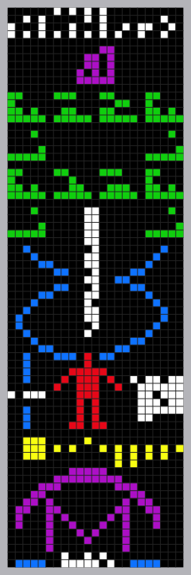
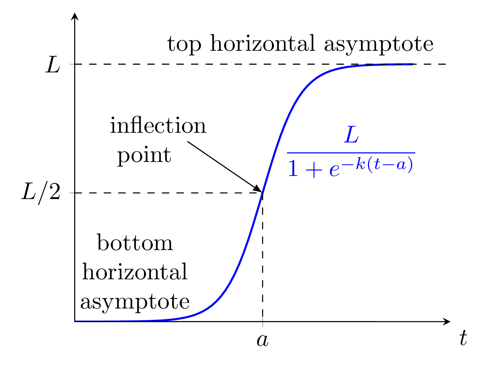

Zipf’s Law claims that city populations decrease according to a power law:
$$
P(r) = C r^{-\alpha}
$$
where $P(r)$ is the population of the $r$-th largest city, and $C, \alpha$ are fitted constants. Classic theory suggests $\alpha \approx 1$, but this varies from region to region.
However, when one plays around finding fits for countries, one often finds that the capital city is often an outlier. This has been extensively noted (see for example Zipf’s Law for Cities: An Explanation from Xavier Gabaix, 1999, from The Quarterly Journal of Economics).
In this post I explain how I built a system using TikZ (a computer language for drawing mathematical figures rather than dragging shapes around) to produce figures efficiently and in a way that is easy to maintain. The system is a template – a bit of reusable structure – for making double number line diagrams, which are a visual tool used in many modern mathematics resources to aid in learning proportional reasoning (think of percentages, ratios, or recipes).
Zipf’s Law for populations says that city populations decrease according to a simple power law:
$$
P(r) = \frac{C}{r^{\alpha}}
$$
Here, $P(r)$ is the population of the $r$-th largest city in a given region, and $C$ and $\alpha$ are fitted constants.
More concretely, this says that the population of the largest city (rank $r=1$) is approximated by $P(1)=C/1^\alpha=C$, the population of the second largest city (rank $r=2$) is approximated by $P(2)=C/2^\alpha$, the population of the third by $P(3)=C/3^\alpha$, and so on. Data from many countries suggests that $\alpha \approx 1$, but in practice, this number can vary depending on the country or region.
Over the past couple of months, I have been experimenting with building self-contained, small, useful web tools with the help of ChatGPT. All of it lives inside a single HTML file. The result?
A live LaTeX MathJax Previewer — a simple, responsive site where you can write LaTeX and instantly see how it renders.
The idea came from a need I had: sometimes I just want to share how to code some math formula using LaTeX and what it looks like when rendered. There are several sites that already do this, but I wanted some specific features I could not find anywhere else. I told ChatGPT what I wanted — something that supports inline math, display math, and full LaTeX mode — and within minutes, I had a working prototype.
TikZ is a programing language for creating images based on
LaTeX. One writes TikZ “programing code” in a
plain text file, and gets as output a pdf image file. The TikZ programming language was thought out to enable the code for a figure to be surprisingly human-readable. What I mean by this is that the reader can imagine the figure from the code because it looks like “drawing instructions for a human” instead of a bunch of obscure commands with lots hard to imagine numbers and coordinates. When carefully crafted, the TikZ code for an image can also be very easy to adjust to produce different images.
The animation shows the complex zeros of the Taylor polynomials of the exponential function $e^z$. In this post I will explain what this means, and why it is interesting. I will also show the code in
Sage to recreate the animation (which I originaly created in Mathematica in 2012). Unlike Mathematica, which is not free or open source, Sage is a Python-based open source mathematics software system that builds on top of many existing open-source packages.
In this post, I will show how I recreated a beautiful figure with spirals from a math-inspired
coloring book using complex functions and Möbius transformations.
Here is one of the way we colored them with my sons!
I find the figure mesmerizing with its slight lack of total symmetry, spirals that go in opposite directions, and intersecting bendy curves at right angles. Because of the right angles I guessed there should be a
complex conformal map involved, and I wanted to figure out how it was constructed and what the equations for the functions that produced this curvy grid looked like.
The animation above is a gif file that was created with LaTeX and TikZ. I had been trying to do something like this with TikZ unsuccessfully for a long time and I finally figured out how to do it. In this blog post I describe all the steps.
There were two “complicated pieces” to sort out:
LaTeX and TikZ do not natively support graphing algebraic curves (implicit plots of the form $f(x,y)=g(x,y)$ with polynomial $f$ and $g$) because it requires precise numerical calculation which LaTeX is not very good at (being a typesetting system, after all).
Latex and TikZ are also not very good at animations, and do not produce gifs. There seems to be some svg animation functionality, and there seems to have been some pdf animation functionality, but neither browsers or pdf viewers have provided good support for these. On the other hand, the web-friendly gif format is the de-facto standard for providing low-res animations on the web (think of rotating 3D logos from the 1990s web).
Given these complications, one may very well wonder why I kept trying to do it. My answer to that is that TikZ is fantastic in several ways:
Another Origami post. I got into making Origami diagrams in this
other post, and I decided I should attempt to make the instruction diagrams for a flower I invented ages ago!
Making these origami diagrams has allowed me to gain a deeper appreciation for origami diagrams in general. Beautiful art! (Both the origami and the diagrams!)
I now realize that lots of thought goes into making these diagrams. Like for example,
While trying to remember how to fold the current long distance record-breaking paper plane, y ended up inventing my own paper plane!
It is pretty similar to the record breaking plane, but it is no exactly the same. I think it has a different balance point, which may make it a better glider (an maybe not long distance record breaking?) It glides very nicely.
These are folding instructions which I created using
IPE, an open source vector image editing software with LaTeX support which I enjoy using. Instructions can also be downloaded in
pdf format.
TikZ is, in very concise terms, a programing language to generate images based on
LaTeX. One runs PdfLateX on a TikZ source file (a
plain text file) and gets as output a beautiful looking pdf.
For a detailed example, you can see this
post in which I show the TikZ code of the following image, or this other
post in which I go into even more details of the TikZ syntax to create the plot of a function with mathematics LaTeX labels.
The Illustrative Mathematics Curriculum/Resources are a collection of Mathematics lesson plans, homework practice problems, and family support materials for all K–12 grades. They were created during the years 2016-2021 and are licensed with the very nice
Creative Commons Attribution 4.0 license (same as this blog) which allows one to freely share and adapt them as long as one keeps the same license and gives due credit. They are very high quality, promoting deep mathematical learning through problem solving, and have been rated very highly by independent non-profit third parties (see
here and
here). You can learn more about the resources at the official
Illustrative Mathematics site.
Ever since the Covid-19 pandemic started, the subject of interpreting a Covid-19 test results has been coming back to bite me over and over again.
I knew the fact that the probability of a Covid-19 test result giving the correct information depends on the portion of the population that is infected at that moment, but I did not know the details or understand why this could be the case. Every time I tried to read about this I ended up reading articles with lots of tables with made-up numbers that did not help me gain any clarity or understanding on the matter.
As part of my work with the Mathematics Consortium Working Group (currently creating data-related activities for our
Applied Calculus book), I discovered that $\text{CO}_2$ concentration, measured at the Mauna Loa observatory in Hawaii since the 1950s, can be modeled surprisingly well by a “super-exponential” function of the form
$$f(t)=P_0(b+mt)^t.$$
Then, while convinced of how alarming and serious this was (super-exponential growth is as alarming as it sounds), I discovered one could also fit an “almost exponential” model which assumes exponential growth not from $0$, but from a base level $C$ instead, like this:
$$g(t)= C+Ba^{t}.$$
This model may make more sense physically, since it seems reasonable to assume $\text{CO}_2$ levels were constant at $C$ ppm before humans started having an impact on the atmosphere, and then began to rise, apparently exponentially. So, the conclusion is that $\text{CO}_2$ concentration may be growing exponentially after all, which is very alarming, but not as alarming as “super-exponential” growth.
This is a follow-up to two previous posts (
here and
here) describing how I set up this blog. Here I describe a couple of extra pieces of the setup including listing tags for each post, and adding the about page.
Listing the Tags for Each Post
The Hyde theme, on which this Hugo site is based, does not list the post tags at the beginning of the page. I wanted to add this to the interface. Here is how I did it.
I recently remembered the very cool Arecibo message and I discovered today that the
Wikipedia article on it is truly fantastic. After reading about the meaning of all the parts of the message, I decided I wanted a printed copy for my home. In this post I describe how I generated the print-ready image file.
Here is the message:

Arecibo Message. Image from
Wikipedia by Arne Nordmann (norro), CC BY-SA 3.0
This is a follow-up to a
previous post describing how I set up this blog. Here I describe setting up more elaborate multilingual support using
i18n.
Multilingual Text “Snippets” Using i18n
Hugo comes built in with i18n support. This is a very nice and simple way to specify fixed texts that should change according to the language. I call these “multilingual snippets”. To start using it all I had to do was create the files en.toml and es.toml in the already-existing i18n folder (Hugo automatically makes this folder what you set up a site) and specify the language-specific texts. The toml files are the “translation dictionaries”.
I was recently invited to participate in a webinar as the lead Spanish translator of the Illustrative Mathematics K-8 Curriculum (see
here). The main point they wanted me to discuss was what was our process translating the resources, and why a simple word-for-word translation like that could be put into Google insufficient.
As a preparation for this webinar, I decided to write this blog entry describing in detail the translation process.
I promised in
another post that I would show the code for the TikZ figure I included in that post, reproduced below:

What is very nice about TikZ and its pfgplots package is that the curve in the figure is really a logistic curve, and not just a Bezier curve, or a spline that attempts to mimic the shape of a logistic. Specifically, the function whose graph shows up in the figure is given by
$$
f(t) = \frac{1}{1+e^{-4(x-2.5)}}.
$$
Today, as part of my work, I stumbled upon the surprising fact that in many countries the % share of Covid-19 cases that were Delta variant grew almost perfectly logistically from 0% to 100% during 2021.
The graph below, which started all of this, should come up if one follows this
Our World In Data link.
Image downloaded from Our World in Data, open access under the Creative Commons BY license.
This blog does not live in a commercial platform for bloggers. It is what is technically called a “static site”, meaning it is just a collection of html files that are linked between each other and some other formatting files (css, for example). As such, it can be hosted anywhere and is not tied to any particular platform. Moreover, it was created with a fantastic open source tool caled
Hugo. In this blog entry I explain how I set it up.
As Joe Harris mentions in his book “Algebraic Geometry: A First Course”, the Twisted Cubic is “everybody’s first example of a concrete variety that is not a hypersurface, linear space, or finite set of points.”
In affine space, it is given by the image of
$$t\mapsto(t,t^2,t^3).$$
As I was working through all the exercises in the book (I still am!) I decided that I wanted to make a Tikz picture for it (to learn to do 3D figures in Tikz).